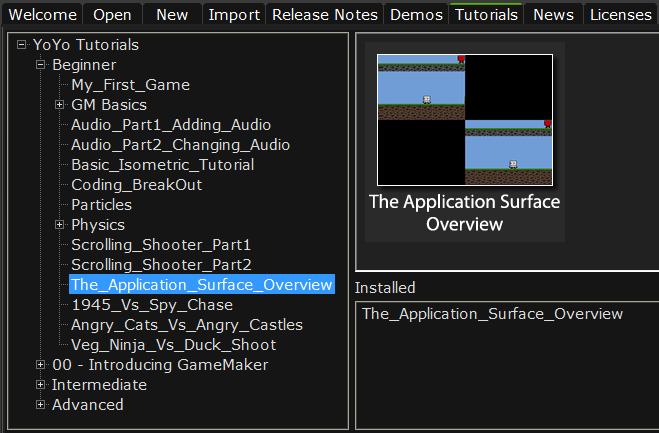

La ubicación del tutorial se muestra en la imagen de abajo

Este tutorial está diseñado como una introducción a la application surface,
sugiere algunos de los muchos usos que se le pueden dar, y es el primero de una
serie de tres tutoriales (los otros se encuentran en las secciones intermedio
y avanzado, en la pantalla inicial de GMS). No obstante, antes de comenzar a
programar, se dará una breve descripción de lo que es la application surface
y por qué es una parte importante de GMS.
En versiones previas de GM y GMS el dibujo era manejado por el back buffer,
todo se dibujaba ahí y después se copiaba a la pantalla. Este proceso evitaba
que el programador tuviera un completo control del dibujo, y que algunas cosas
no se realizaran correctamente, como el ajuste a pantalla completa.
Para remediar esto, GMS cambió su draw pipeline en la versión 1.3,
ahora se dibuja en una superficie especial - la application surface.
NOTA: Si no está familiarizado con las superficies (surfaces), entonces es recomendable que lea el manual y los tutoriales sobre superficies antes de continuar.
Esta superficie especial es creada por GMS de forma automática que, a diferencia
de las superficies normales, no se puede borrar. Sin embargo, en todos los demás
aspectos funciona como una superficie normal; se puede dibujar y manipular con
las funciones de superficies. Como identificador de la superfice se usa la
variable application_surface.
Conociendo la existencia de esta superficie y cómo manipularla se abren las
puertas a varios efectos interesantes, que vamos a explorar ...